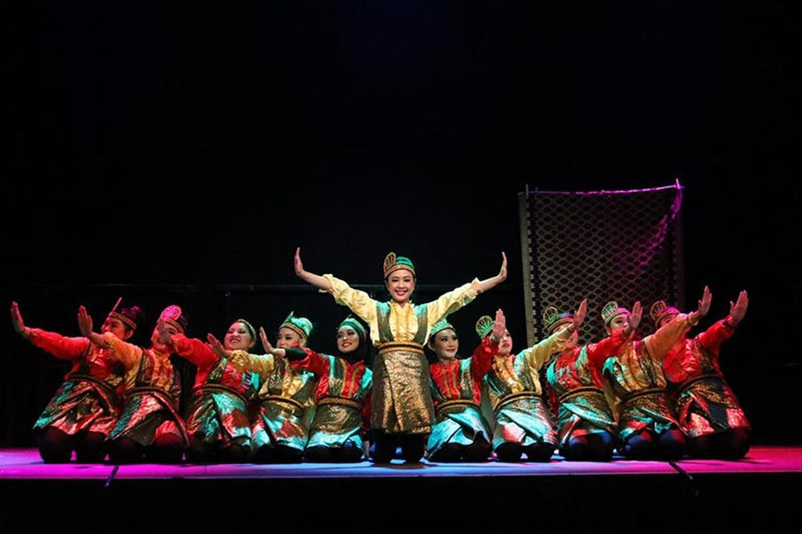

Mie Aceh Mi pedas khas dengan cita rasa yang menggugah selera.
Ayam Tangkap Ayam goreng dengan daun rempah dan aroma khas.
Kopi Gayo Kopi Arabika terbaik dunia dari dataran tinggi Gayo.
Mie Aceh Mi pedas khas dengan cita rasa yang menggugah selera.
Ayam Tangkap Ayam goreng dengan daun rempah dan aroma khas.
Kopi Gayo Kopi Arabika terbaik dunia dari dataran tinggi Gayo.
🌺Mengenal Keindahan dan Budaya Tanah Rencong Aceh, tanah yang kaya akan budaya, sejarah, dan keindahan alam, menyimpan sejuta pesona yang siap untuk dijelajahi. Terletak di ujung barat Indonesia, Aceh bukan hanya dikenal karena peran pentingnya dalam sejarah Nusantara, tetapi juga karena keasrian alam, kelezatan kuliner, dan kekayaan tradisi yang masih terjaga hingga kini.
🏞️ Eksplorasi Keindahan Alam Dari pantai berpasir putih hingga pegunungan yang hijau, Aceh memiliki destinasi wisata alam yang menakjubkan. Beberapa tempat favorit:
Pantai Lampuuk Surga tersembunyi dengan pasir halus dan ombak tenang.
Pulau Weh (Sabang) Spot menyelam kelas dunia dan titik nol kilometer Indonesia.
Air Terjun Blang Kolam Air Terjun Blang Kolam Keindahan alam di Lhokseumawe yang menyejukkan jiwa
🕌 Kekayaan Budaya & Sejarah
Aceh dikenal sebagai Serambi Mekah karena kentalnya nilai-nilai Islam dalam kehidupan sehari-hari masyarakatnya. Selain itu, Aceh juga memiliki jejak sejarah yang kuat:Masjid Raya Baiturrahman Masjid Raya Baiturrahman Ikon kota Banda Aceh yang megah dan sarat sejarah.
Museum Tsunami Aceh Tempat mengenang dan belajar dari bencana alam 2004.
Museum Tsunami AcehRumah Adat Aceh (Rumoh Aceh)Simbol arsitektur tradisional dan nilai budaya
🛠Nikmati Lezatnya Kuliner Khas Kuliner Aceh kaya akan rempah dan rasa yang kuat. Beberapa hidangan yang wajib dicoba:
Mie Aceh Mi pedas khas dengan cita rasa yang menggugah selera.
Ayam Tangkap Ayam goreng dengan daun rempah dan aroma khas.
Kopi Gayo Kopi Arabika terbaik dunia dari dataran tinggi Gayo.
ğŸ Budaya & Tradisi Aceh Saksikan tari saman yang menggugah hati, nikmati kuliner khas seperti Mie Aceh dan Kuah Pliek Ue.
